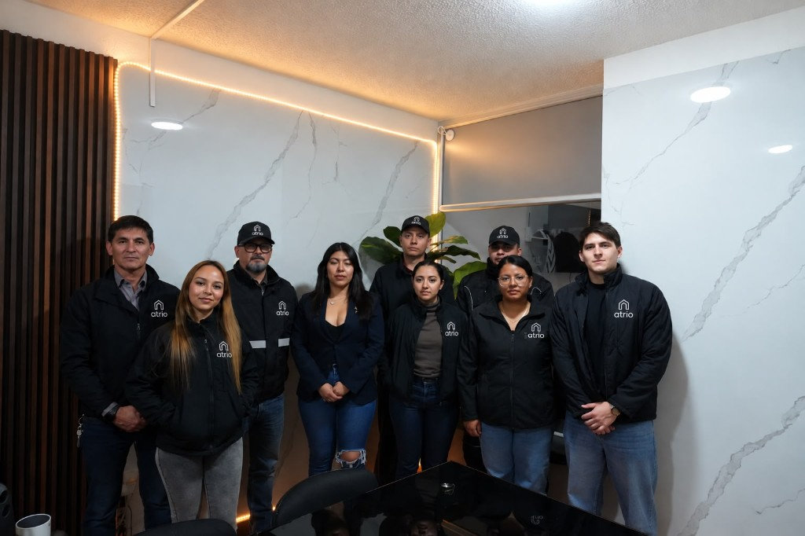

Cuentas difíciles de leer
Presupuesto, ejecución y cartera quedan en el mismo informe, con el mismo equipo.
30 años de experiencia en propiedad horizontal
Centralizamos la operación, las cuentas y el seguimiento para que el consejo tenga información clara y un responsable definido.
Solo necesitamos el nombre del conjunto, la ciudad y el número de unidades.
Problemas que solucionarías con Atrio
Presupuesto, ejecución y cartera quedan en el mismo informe, con el mismo equipo.
Se ve quién está al día, quién debe y qué gestión se ha hecho.
Cotizaciones sueltas, vencimientos que se pierden y nadie que responda por todos. En Atrio la operación los coordina el mismo equipo.
Hay un responsable que puede responder por el edificio y por las cuentas.
Servicios
Contratamos la operación del edificio y las cuentas juntas. Así una pregunta sobre un gasto, una cuota o un proveedor se resuelve con el mismo equipo.
Representación ante el consejo y la asamblea, convivencia, reglamento, proveedores y mantenimiento de las zonas comunes.
Presupuesto, ejecución, estados, recaudo, cartera, paz y salvos y soportes de cada pago. La contabilidad hace parte del servicio.
Informes, convocatorias y seguimiento de lo aprobado. El presidente y los miembros del consejo consultan la información del conjunto a cualquier hora, con una herramienta de apoyo de Atrio.
La propuesta depende del número de unidades y de las zonas comunes. Un conjunto de cuarenta apartamentos no se administra igual que uno de cuatrocientos.
Valor agregado
El presidente y el consejo no tienen que esperar el cierre de mes para saber cómo va la copropiedad. Entran al panel y ven el saldo, la cartera, la morosidad, el recaudo y cuánto del presupuesto ya se ejecutó.
Atrio sigue administrando y llevando la contabilidad. El panel muestra esos números para que el consejo los revise con tranquilidad, cuando quiera.
El enlace abre un conjunto de demostración. No son las cifras de un cliente.
Equipo
Son 30 años de experiencia en propiedad horizontal. Administración, contabilidad y operación están en Atrio: el consejo tiene a quién llamar, y esa persona puede responder por el edificio y por las cuentas.

Consejo, asamblea, reglamento y convivencia.
Presupuesto, estados, cuotas, cartera y soportes.
Proveedores, mantenimiento, pólizas y zonas comunes.
Cómo empezamos
Nombre, ciudad, número de unidades y qué les preocupa hoy.
Reglamento, presupuesto, cartera y contratos. Con eso armamos el alcance y los honorarios.
Si nos nombran, arrancamos la administración y la contabilidad en el mismo mes.
Preguntas
Sí. Hace parte del servicio de administración. El presupuesto, los estados, la cartera y los soportes los lleva Atrio. No es un contador externo al que haya que escribirle por separado.
Sí. El presidente y los miembros del consejo tienen acceso para consultar cómo va el conjunto a cualquier hora. Es un apoyo de la administración, para no depender de una llamada cada vez que necesitan un dato.
No. El revisor fiscal controla. Atrio administra y lleva la contabilidad. Conviene que sigan siendo funciones distintas.
Los contrata el conjunto, a su nombre. Atrio los supervisa y le presenta al consejo el proveedor, el valor y el vencimiento.
Residenciales, mixtos y comerciales en propiedad horizontal. Trabajamos en Bogotá y la Sabana. Si el conjunto está en otra ciudad, cuéntenos y vemos si podemos atenderlo.
Nuestro blog
Siguiente paso
Con el nombre del conjunto, la ciudad y el número de unidades alcanza para la primera conversación.